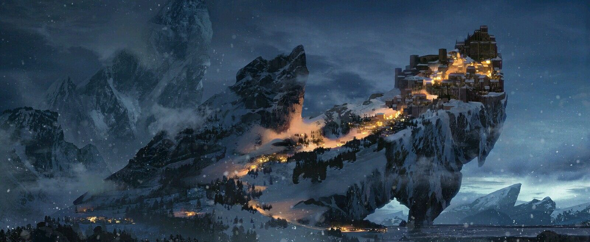
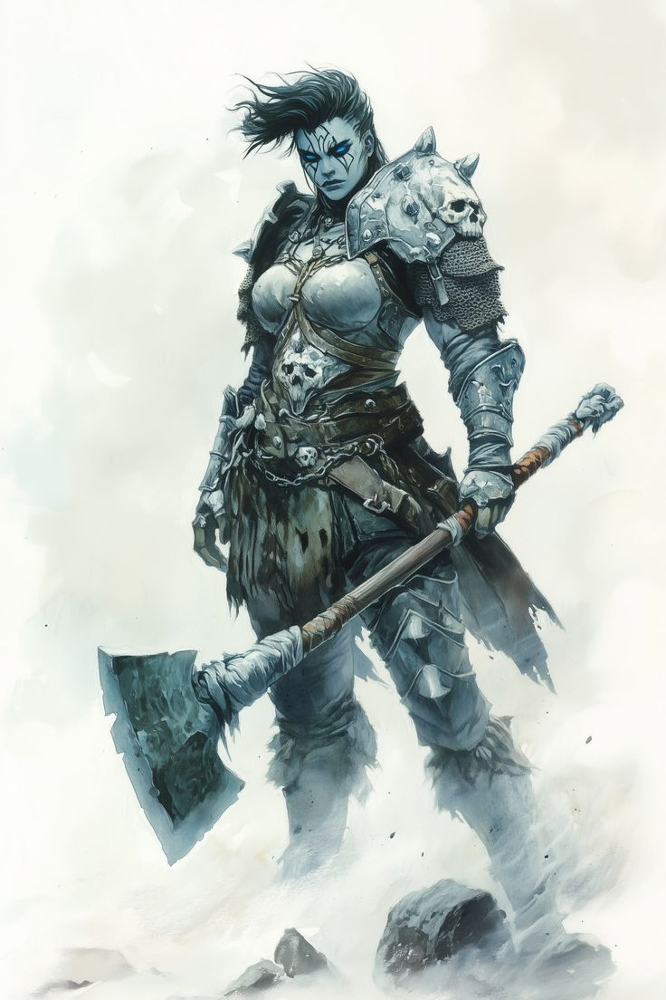
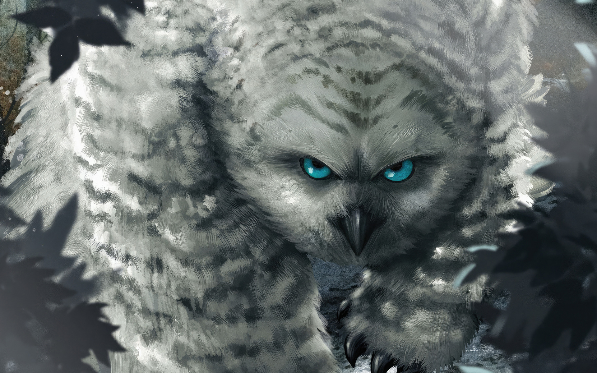
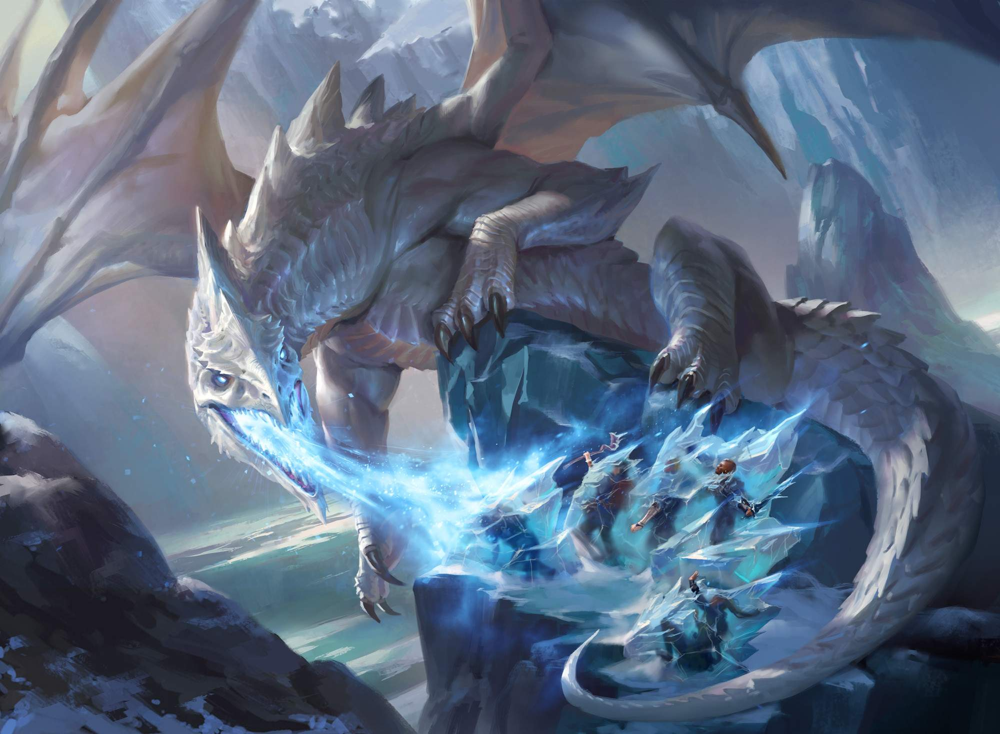

🏔️ Крепость Нуграм
Цитадель горных голиафов

Население: Голиафы
Правитель: Нала (Каменная Скала)
Статус: Неприступная крепость
Описание
Нуграм — это большая, поистине непробиваемая крепость, затерянная среди ледяных пиков. Она населена крепкими и выносливыми существами — голиафами. За всю историю еще никому не удавалось покорить это место. Суровый климат, отвесные скалы и непробиваемые стены делают Нуграм неприступным бастионом, который сама природа защищает от врагов.
Нравы голиафов
Голиафы — гордый и независимый народ. Они предпочитают не вмешиваться в дела других королевств, живя по своим древним законам и традициям. Однако, если дело доходит до сражения, им нет равных. В бою голиафы полагаются на свою невероятную силу и выносливость, а их тактика основана на знании каждой тропы и каждого выступа в родных горах.

Правительница Нала
Этими землями правит голиафиха Нала, прозванная «Каменной Скалой». Говорят, её характер столь же тверд, как и стены Нуграма, а решения она принимает с холодной и непоколебимой рассудительностью.
Опасности перевала
Климат здесь очень холодный, но даже это не является главной опасностью для тех, кто осмелится подойти к стенам. Весь ледяной горный перевал населен снежными волками, белыми медведями и медвесычами. Они — истинные хозяева этих земель, и их голод может быть страшнее любого мороза.
Но самая страшная угроза таится в глубине снежных гор. Там, в ледяных пещерах, скрывается ледяной дракон и его потомство. Их присутствие делает любой поход к Нуграму смертельно опасным предприятием.


Ключевые угрозы
- Снежные волки: стайные хищники, атакующие из засады.
- Белые медведи и медвесычи: могучие звери, не знающие страха.
- Ледяной дракон: древний хозяин глубин, чье дыхание обращает в лед.